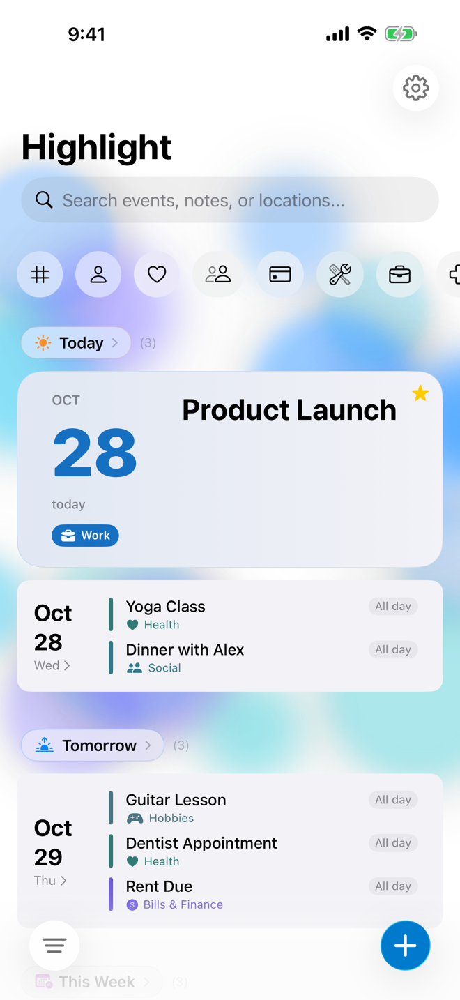
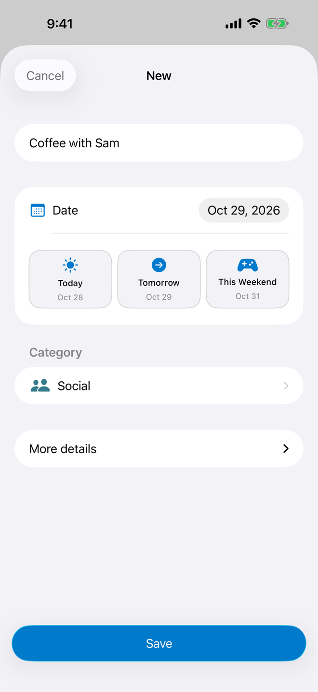
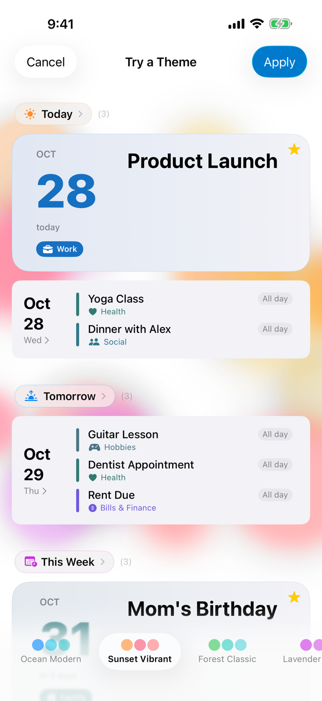

Everything on one timeline
Featured events and your next event get a large card. Past events fold away into their own section. Nothing gets buried.
A beautiful timeline for birthdays, appointments, and every moment worth remembering.

Your timeline, always surfaced.
Featured events and your next event get a large card. Past events fold away into their own section. Nothing gets buried.
New in 1.1: see what’s coming up on Apple Watch, and add, edit or delete events right from it. Changes sync with your iPhone both ways.
One clean form with quick dates: Today, Tomorrow, This Weekend. Notes, reminders and an exact time wait under More details until you need them.
Ten themes, in light or dark mode. Try any theme on your own timeline before you apply it.
Turn on a reminder for any event and Highlight suggests a sensible time for its category, like the day before an appointment or three days before a bill. You decide.
Small, medium and large widgets. What’s coming up, always one glance away.
Not a work calendar. Not an agenda view. A timeline for birthdays, appointments, and everything that makes life worth showing up for.

